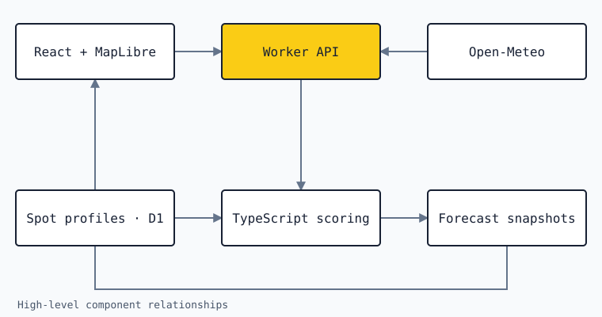

Surfay
Interpreting a marine forecast for the beaches of Galicia.
- My work
- Forecast application and model development
- Project focus
- Forecasts · Local context · Maps
The problem
The same offshore forecast can mean different conditions at different beaches. Surfay combines marine forecasts with local spot profiles to make conditions easier to explore along the Galician coast.
My contribution
I’m building the React and MapLibre interface and the supporting forecast application. A Cloudflare Worker serves the backend, a shared TypeScript engine scores forecasts, and D1 holds the spot catalogue and forecast snapshots.
The forecast interface
The map and forecast views let visitors explore conditions by spot. Local profiles give the forecast context rather than presenting offshore values as if they apply equally everywhere.
The scoring pipeline
The server retrieves marine weather from Open-Meteo and prepares a seven-day forecast. The model includes coastline exposure and reviewed bathymetric cases for refraction and shoaling.
Serving forecast data
Forecast snapshots are cached on the server. This lets visitors read the prepared dataset without every visit triggering a fresh request to the forecast provider.
- React
- MapLibre
- TypeScript
- Cloudflare Workers
- D1
- Open-Meteo
How the pieces connect
Forecast data passes through a server-side pipeline before reaching the browser. The scoring engine combines provider information with local context, while stored snapshots support the interface.

Design notes
Local context instead of a universal score
Spot profiles and coastline exposure help interpret conditions locally. The result remains a model: it is useful to describe what is included and what still needs calibration, rather than treating a score as an observation.
Server-side work, shared forecast snapshots
The model runs behind the interface and the prepared results are cached. This separates forecast processing from browsing and avoids a new provider request for every visitor.
A model with visible boundaries
Reviewed bathymetric cases model refraction and shoaling. Other effects remain outside that table. Keeping those limits explicit makes it possible to explain what a forecast represents without overstating its precision.
Where the project stands
Surfay combines a map-based interface, local spot profiles, and server-scored forecast snapshots. Its model includes coastline exposure and researched bathymetric effects.
Scope and limitations
Forecast scores are model outputs, not measured surf conditions. Calibration and modelling limits remain part of the work; this case study makes no numerical accuracy claim.